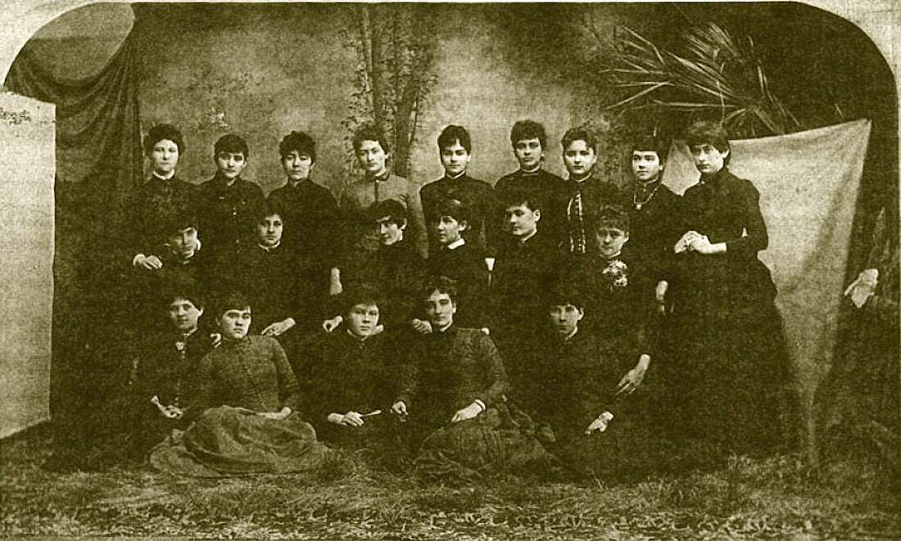
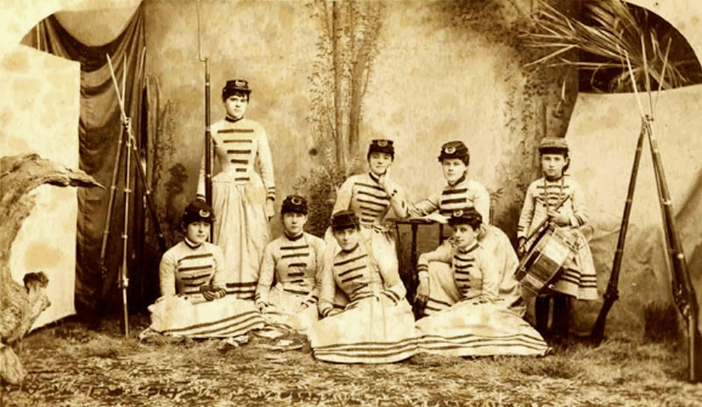
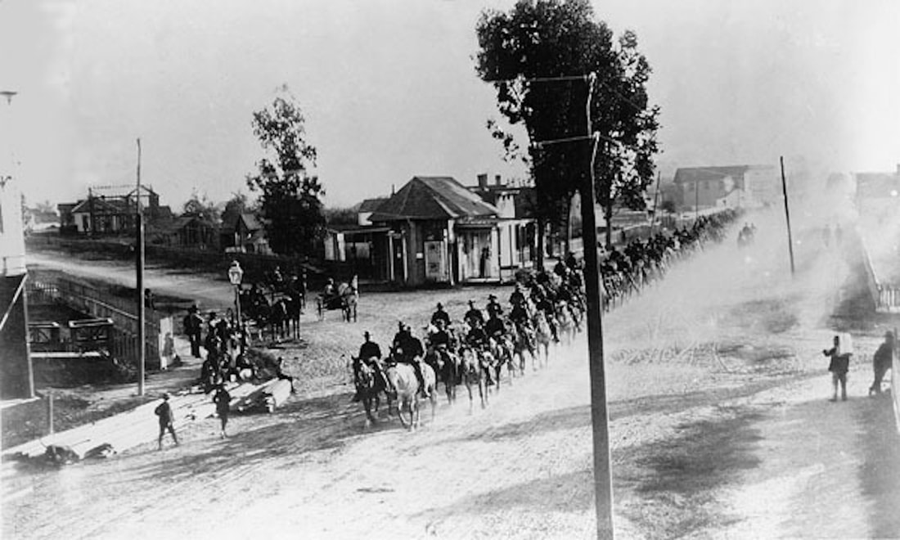
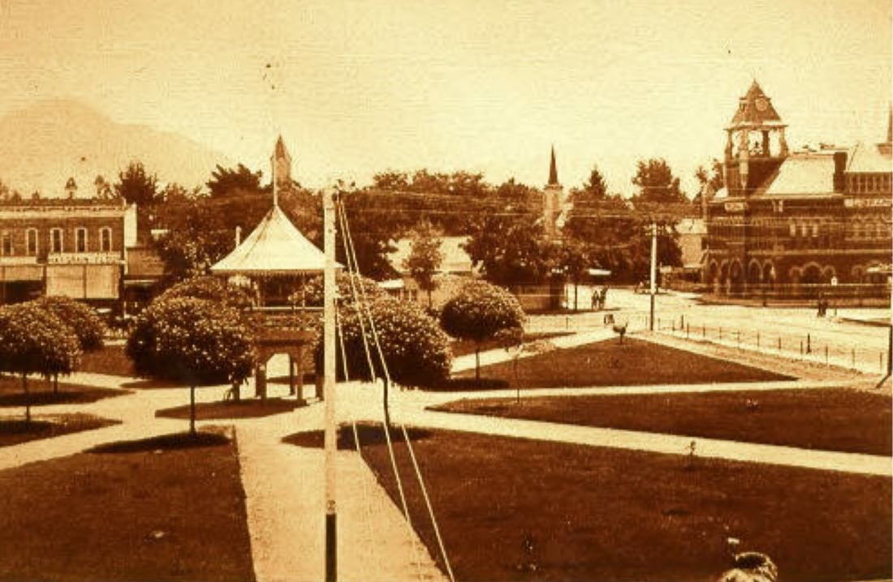
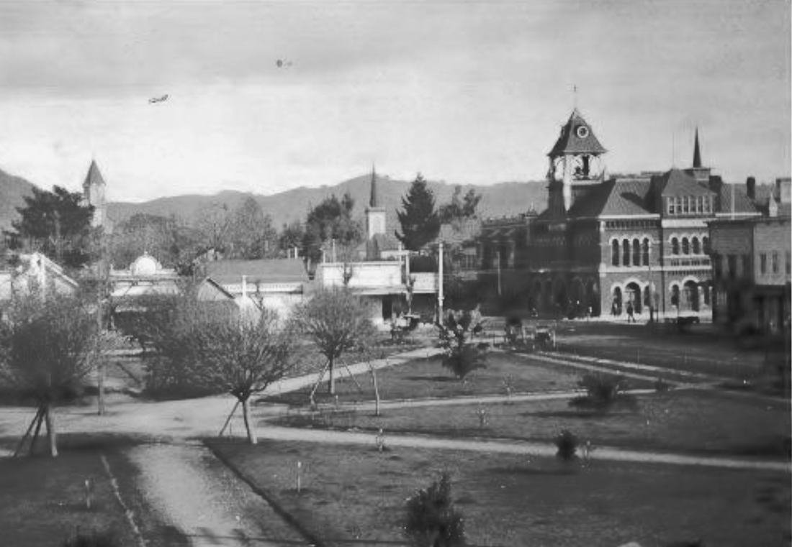

The Albanian Literary and Military Society
and the Ladies Improvement Club
© 2020 Hannah Clayborn All Rights Reserved
|
It all started with a pair of fading sepia photographs I came across occasionally during searches in the Healdsburg Museum photo archives. They intrigued me because one showed a group of prim young ladies in the bustled, tight-fitting, bust-bunching street costume of the 1880s. The other showed some of the same girls in mock military uniforms, solemnly posed with very real firearms. On the back of both photographs was written, "Albanian Literary and Military Society".
Albanians? Could there be that many Balkan immigrants in Healdsburg? These girls didn't look Albanian. Literary and military pursuits seemed an unlikely combination. What were these young women up to? At the time there were no newspapers from that period—the mid 1880s—in the museum collection. That gap in the record threatened to leave the young Albanians forever a mystery. But mystery did not dull my affection for the oddball group, and I reproduced the photos in one of our newsletters. The first part of the puzzle came together several years later when Addie Marie Meyer of Healdsburg was looking through an old family scrapbook. She came across a pair of undated newspaper clippings about the club. Having an excellent memory, Mrs. Meyer recalled my old newsletter query. The first clipping read: Twenty-five young ladies in this city have organized a literary club called the Albanian, which meets every Tuesday night to study and discuss the work of some noted author, musician, or poet. These young ladies do not confine their exercises entirely to the musical and literary, but have taken up the practical study of Upton's Tactics as a means of sustaining health and physical vigor, and they drill every Saturday afternoon. Their literary entertainments have proved very successful, making hosts of friends and admirers, and old soldiers who have seen years of service claim that the Albanian drill is remarkable for its excellence and timely regularity. Last Friday night the Albanians, fully uniformed, in the presence of hundreds of friends and admirers, swept into line from side to side of Truitt's large hall in perfect alignment and with but one perceptible footfall, the two ladies on the right and the no less comely and stately ones on the left, marched to the cadence of France's delightful music, creating a furor of applause not often witnessed or heard in the quiet little town of Healdsburg... It may seem unremarkable to modern readers, but at the time many believed that physical exercise was not only unladylike, but even harmful to the female anatomy, and the sight of local girls performing a military drill must have horrified some. Upton’s Tactics refers to Emory Upton (1839–1881), a United States Army General and military strategist, prominent for his role in leading infantry to attack entrenched positions successfully. The Albanians sparked interest as far away as San Francisco, where the Alta California newspaper filed the following report:(1) The Dark Ages
Back in the Dark Ages—I mean before the internet—when we had to rely on references in our own research libraries, or travel long distances to others, such things were likely to remain mysteries. For historians the internet is a profound innovation. Although the first undated newspaper clipping above remains stubbornly undocumented, probably from that lost group of 1880s newspapers, the second, an Alta California article (above), March 10, 1886, has been found, along with several others that give us a better picture of this dashing peer group who swashbuckled and partied their way into adulthood, and as they matured, had a seismic impact on Healdsburg. Dr. William Chapman Shipley (1872–1960), recalled a group of girls born in the early 1860s, who would have been about 10 years his senior, in his newspaper column in 1947: Along in the eighties the up and coming ladies of the Old Home Town organized a club just for their own pleasure. This club of dashing damsels included most of the outstanding young ladies of the town and country round about, Onie Mulligan, the Willy sisters, the West sisters, Mamie Swain, Jenny Luce, Nellie Brown, the Barth girls, the Emerson girls, the Griest sisters, May Congleton, Carry Alexander, Mary Corbelly and a whole flock more whose names have been hidden in the fog of time, helped make up this galaxy of gorgeous girls…(2) An octogenarian former Albanian in 1947, Onie Mulligan [Florence Leonie Mulligan Forge (1861–1959)], extended Dr. Shipley’s list of Albanians: …May Shaw, Mary Ryan, Kate Ryan, Ann O’Conner, Milly Sewell, Annie York, Lillian Favor [Favour], Sara Sullivan, Mamie Sullivan, Laura Cavanaugh, Millie Emerson, Nellie Emerson, Lulu Powell, Emma Truitt, Emma Logan, Artie Greist [Griest], Minnie Reynolds, Mary Madera [Madeira], Alice Barth.(3)  Albanian Literary and Military Society, Nov 20, 1885 Back row: Marie Sullivan, Ann O'Connor Wattles, Minnie Reynolds McMullin, Mary Ryan Swisher, Emma Fried Haigh, Mary Corbaley, Mamie Swains Morgan, Millie Emerson Phillips, Kate Ryan Byington Middle row:: May Shaw, Artie Griest, Mary Madeira Truitt, Mabel Lee,, Laura Cavanaugh Whitney, Mildred Sewell Hilgerloh Front row: Lou Madeira Powell, Emma Logan Beeson, Sara Sullivan Ross, Nellie Brown, Emma Truitt Petray, (placeholder Healdsburg Museum)
 Albanian Literary and Military Society, first set of uniforms,1885;
front: Minnie Reynolds McMullin, Emma Truitt Petray, May Shaw, and Artie Giest; second row: Emma Logan Beeson, Millie Emerson Phillips, and Sara Sullivan Ross. Drummer girl not identified.
(source of names: Shipley, Tales of Sonoma County, photo Healdsburg Museum)
Rid of the Hoops
Many think that the women's rights movement, including the fight for the vote, is a Twentieth Century phenomenon. The struggle for equal rights for women extends much farther, even to the Civil War. In the 1880s there were very visible changes, both in women's attitudes and dress. In the 1880s women got rid of the huge hoop skirts and layered petticoats that had incapacitated them since the 1850s. They began to wear long full skirts with matching jackets, tailored very much like a man's suit. Except for the weird aberration known as the bustle, and the ever-present corset that helped contain them beneath the taut silk and linen of their jackets, it was much easier for women to move about in this new full skirt devoid of barrel structure. Healdsburg had no high school until 1888. When most of these girls formed their club, likely in the summer of 1885, it may have been their only opportunity to extend their learning and flex their intellectual muscles. This group of inquisitive, healthy Healdsburg girls was also in the forefront of a new attitude for women, the revolutionary idea that girls could not only read great literature without damaging their psyches, but they could also exercise without damaging their bodies or their sterling reputations. Not only did they have the originality to link the concept of books to bayonets, they exercised, possibly even sweated, in public, on the stage of Truitt's Theater in downtown Healdsburg. But as it turned out, this was only their political boot camp. Their first documentary trace is a notice in October 1885, in the Sonoma County Democrat (precursor of the Press Democrat) which may reflect their inception, but gives no mention of a military connection: The Albanian Literary Society of Healdsburg propose to give a literary, musical and dramatic entertainment next Friday night, October 23, 1885, at Truitt’s Theater.(4) By February of 1886, however, the editor of the Russian River Flag, informs us of their military evolution and more importantly, new uniforms! ALBANIAN DRILL. Novelty and Social Dance, at Truitt's Theatre Friday Night. March 5th, 1886 This will be the second grand military, musical and dramatic entertainment given by the young Ladies’ Literary and Military society of Healdsburg, supplemented, this time, by a characteristic drill of the whole club in their new uniforms. After the drill a social dance will be offered to those friends who desire to participate in this very healthful amusement. ENTERTAINMENT PROGRAMME 1. Select music by the Sotoyome Brass Band. 2. Beautiful character songs and selections by the Albanians. “The Queen's Page or the Idiot Witness,” a powerful and popular three-act melodrama. 4. Characteristic representations from Byron’s Childe Harold, etc. 5. Grand Albanian Drill. The ladies in fu]l marching uniform. The whole exhibition is a marked novelty, especially the last feature, as there is no company of young ladies, but the Albanians, in this part of the country, who have successfully attempted to go through a thorough system of military drill as a calisthenic and health exercise. Doors open at 7:15 p. m. Stage performance to commence at 8 o’clock sharp. Dancing 10 p. m. Admission to the entertainment and drill, with reserved seat coupon, 50 cents. Admission to children under twelve, 35 cents. Ticket to entertainment and dance admitting a gentleman and lady, $1.50. Boxes, $3.50…(5) These are significantly high admission prices at the time and fundraising also became a specialty along with the military drill. The Albanians’ skill and dashing new uniforms brought them notice by the San Francisco, Daily Alta California newspaper that year. (see above), which described…a scarlet liberty cap, scarlet waist sash, scarlet zouave jacket with white cloth cuffs and collar, sky-blue vest with gold buttons, close fitting, white merino skirt reaching to the ankles, and black, high-topped walking shoes complete the drill costume. It was these colorful new uniforms, not the more sedate ones pictured at the top of this page in the 1885 photograph, that Dr. W.C. Shipley remembered somewhat differently, describing the Albanians' uniform as a red fez, black silk blouse, gaudy colored bloomers with red slippers and for arms they carried shiny steel wands something like fencing foils.(6) Shipley then surmises that the new outfits are the reason for their name, Albania being an "Oriental" country, inspiring their costume. But Shipley was unaware that they had chosen the name Albanian Literary Society in the fall of 1885, before the military aspect had evolved, and also that their first uniforms copied the sedate standard issue of the Civil War soldier. What Were They Wearing? Shakespeare is their Drill Master
Dr. Shipley does fill us in on one "Colonel" Stephen Hamnet Shakespeare, who took on our Albanians and taught them how to drill: Major Shakespeare [his honorific appears to be fluid], military instructor at the Lytton Military Academy, was their teacher. He was a very proper, dignified gentleman of the old school, an ex-West Pointer, who wore his beard to make him resemble the Bard of Avon, all of which was as it should be. They drilled in the spacious Truitt’s Theatre and on their first effort he had them line up, or rather fall in, according to height, no doubt they made a beautiful picture for they were all good lookers full of the vitality of youth. He started with the command, 'Tension", and the explanation of that important soldierly position. Heads erect, eyes front, shoulders back, chests out, abdomen drawn in, heels together with feet at an angle of forty-five degrees, chins in, then he paused for a second as if contemplating the beauty of the spectacle and his final word, then he wound up with,“little fingers at the seams of your pants,” same as he would do with the boys at the academy. A look of horror and surprise overspread their expectant lovely faces, for a second their modesty had been shocked, then all the girls simultaneously broke into laughter, it had struck them funny and how they did give vent to their mirth. The dignified Major was a bit nonplussed at the unexpected outburst of glee and unsoldierly conduct, then he too sensing the irony of the situation joined in the merriment so the tense situation was relieved. Of course the story got noised about town and the boy friends of the Albanian girls embarrassingly twitted them about putting their little fingers along the seams of their pants and how did they manage to accomplish such a dextrous feat.(7) Samuel Shakespeare apparently had many talents in addition to his military instruction for the Albanians and Lytton Academy. He also played the piano at their events. In describing a panorama Shakespeare drew of Healdsburg in 1872, Holly Hoods found that the artist had also served as a hospital steward on Angel Island, taught art in Healdsburg, became a druggist, and taught elocution at the Tamalpais Military Academy.(8)  The arrival of Company H of the Third Infantry Regiment of the National Guard arriving in Healdsburg would have resembled this arrival of The Gatling Battery of the Union Guard arriving for their summer encampment in Santa Cruz in 1880 (Santa Cruz Public Library).
Third Infantry Camps in Healdsburg
In July of 1886 the Albanians were thrilled to receive Company H of the Third Infantry Regiment of the California National Guard, who encamped at Matheson Park. The Albanians gave the officers a gala reception. …The decorous conduct of the gentlemen soldiers was commendable. Not a disagreeable incident marred the pleasure of the evening. The Albanians in the bright tricolor costumes looked lovely. Like fairy dolls they flitted through the maze of the waltz. The bright costumes of the ladies and uniforms of the cadets formed an ever changing picture of color. After the dance refreshments were served and at midnight all dispersed for their homes. Colonel Shakespeare in his full uniform looked the soldier that he is, to his management may be attributed the success of the party. Healdsburg should be proud of its Albanians. The following ladies and gentlemen were present: Albanians: Colonel S. Shakespeare, Annie O’Connor, Minnie Reynolds, Lillian Favour, Sadie Sullivan, Mamie Swain, Mary Ryan, Kate Ryan, Nellie Brown, Onie Mulligan, Minnie Meyer, Lulu Maderia, May Shaw, Emma Logan, Alice Barth, Susie Barth, Emma Truitt.(9) The next month the club elected its leaders, President Miss Mary Shaw; Vice-President Miss Mary Ryan; Secretary Miss Florence [Onie] Mulligan; Treasurer, Miss Millie Sewell; Guards Misses Mamie Sullivan and Kate Ryan.(10) It may be that not all of Sonoma County supported the Albanians as much as the media of Healdsburg and San Francisco. An odd item gleaned from the Cloverdale Sentinel stated: We hear it whispered that some of our young men are completely taken with the Albanian ladies of Healdsburg. We don’t believe it though.(11) The Last Ball
The last recorded Albanian Literary and Military event was a grand ball at Truitt’s Theater in February 1887, when the ladies cleared $40 profit, a considerable sum at the time. According to a somewhat snide reporter from Santa Rosa, who found the music execrable, the large crowd was an indication that their friends are not all dead. Nevertheless he painted the mental image of that final Albanian ball: …The theater was beautifully decorated with long festoons of ivy reaching from the galleries to the gas hangings; arabesques of ferns dotted the blank walls, mingled with digs and banners bearing the letter A. Over the proscenium, suspended on a wire, and backed by fringes of maidenhair ferns, was the legend, “Albanian”, in gold block letters. All the decorations were put in place by the ladies themselves and when your reporter visited the ball, he found one of the ladies on the top of a tall, dangerous-looking stepladder. There were many fine dresses and the girls never never looked more attractive… (12) The last mention I have found of the Albanian Literary and Military Society is a note that they had donated money to improve the Plaza, namely to level the site in 1888.(13) I thought they had perhaps married and left their girlish club behind. Help from an Albanian’s Daughter
It was not until the two faded photos of the Albanians were published in the Healdsburg Tribune in the 1990s that the next puzzle pieces fell into place. Healdsburg native, Carmel Byington Bottini recognized her mother, Katherine Ryan Byington, and her aunt, Mary Ryan Swisher, in those photographs. Although she could not tell me why the group chose the name, she did recall that her mother said the group met at Truitt’s Theater. Most importantly, she remembered her mother saying that most of these girls later joined another group called the Ladies Improvement Club. Suddenly things became clearer; I had certainly met these ladies before. The first mention of such a group comes six years after the last mention of the Albanians, in November 1895, when we are informed: The Young Ladies’ Improvement Club promises to become a factor of much consequence to local society. It is composed of young women who have been identified with all important social doings in the community, and the event on Thanksgiving night, under their auspices, will undoubtedly be a success in every way. No dance or ball is likely to occur between now and then, and by that time such pastime will be in demand. The several committees are sparing no efforts that will give brilliancy to the occasion and all look forward to it as one that will be the grandest event that Healdsburg has had in all the year.(14) With barely enough time to catch their breath from the Thanksgiving Ball, comes an advertisement for a play on November 30th, entitled The Streets of New York, by the Healdsburg Drama Club, under the auspices of the Young Ladies Improvement Club. Once again their venue is Truitt’s Theater, owned by the father of one of their former Albanian sisters, Emma Truitt. Then all goes quiet for another four years, until the "young ladies" make another dramatic entrance. Taking Up Political Arms
Jettisoning the word "Young", The Ladies Improvement Club of Healdsburg, with 44 members, mustered in for a new tour of duty on Friday, August 11,1999. The newspaper tells us: The ladies of Healdsburg have caught the spirit of progress which is pervading the air of this section and have formed an Improvement Club. A number of them met at the residence of Mrs. S. Meyer Friday evening and organized by electing Mrs. F. Hazen, President; Mrs. W. H. Barnes, Vice-President; Mrs. L. W. Doane, Secretary; Mrs. W. Rosenberg, Treasurer. A committee composed of Mrs. Teb Young, Mrs. Sam Meyer, Mrs. H. O. Ferguson, Mrs. E. S. Gray and Mrs. John Gunn was appointed to outline a plan of work.(15) By the spring of 1900 the Ladies Improvement Club was absolutely the most controversial club in town. It would appear that after two prolonged lulls (to allow for love, marriage, and diapers?) these former teenage revolutionaries, along with some older mentors, took up political arms to improve their community. In so doing they challenged the male political establishment and ignited a firestorm of controversy. It all began innocently enough, holding fundraising bazaars and electing the obligatory annual officers. When they first appeared on the scene Tribune editor F. W. Cooke was overtly gracious, but managed a gloved criticism of their temerity in using their own first names instead of their husbands’: The organization of the Ladies Improvement Club of Healdsburg is a most commendable movement, Healdsburg presents a splendid virgin field for their labors, and the Tribune rejoices that they have undertaken the work. Bounteous Nature needs little assistance to make Healdsburg one of the most attractive interior cities of California, and the ladies will undoubtedly meet with a ready response from the City Fathers and tax-payers for the means to carry out any improvements they may advocate. It will he noted by reference to the list of members of the Improvement Club published elsewhere, that the ladies are unwilling to share any of the glory or honor that may result from the seeds of improvement they will sow, and in consequence have discarded their husbands’ baptismal names, and taken up the work in their own feminine appellation. We congratulate them on their independence. May they meet with every encouragement and success in their most commendable undertaking.(16) Alas, this author cannot locate the list referred to above. By January1900, under the leadership of Mrs. W. H. Barnes, Mrs. E. Hamilton, Mrs. J. McDonough, and Mrs. Wolf Rosenberg, the group had already accomplished the lettering and installation of the first street signs, and had all of the electrical poles painted (maybe white?)(17). Even before they became an official club the women apparently played a significant role in the great fight for publicly owned electricity and water in Healdsburg, and this battle might have given them a taste for politics. (see Against the Wind: the Fight for Public Utilities on this website) Ladies Take the Reins of the Municipal Coach
A glowing letter about the Ladies Improvement Club from a Healdsburg correspondent was printed in a regional newspaper and quoted in the Tribune on April 5, 1900: Dissatisfied with the progress of the town under masculine rule, the ladies gently but firmly took possession of the reins and are now driving the municipal coach in their own sweet way. And man—slow going Silurian man!—well, he has been shelved, forced aside, and made to take a back seat while his wife and his sisters and his cousins and his aunts give him practical lessons in making a city clean, attractive, and beautiful. There is an organization of course. It is called the Ladies Improvement club of Healdsburg and it was formed in August of last year. Since that time—in the short space of seven months—this is what the club has accomplished: a municipal water system a municipal electric light plant comfortable seats on the Plaza names given to streets signboards with street names a drinking fountain on the Plaza All of these improvements had been discussed for years—by the men—as desirable...in the misty future. It remained for the women to make them realities.(18) Editor Cooke reprinted portions of this letter with sarcasm, without concealing his own hostility towards the purposeful “ladies”. He seemed to doubt that the club should take credit for the list.  Plaza with bandstand Gazebo, 1897. (Sonoma County Library)
Lady Imps Ignite Firestorm
There was one thing that everyone in Healdsburg was ready to credit or blame the Ladies Improvement Club for—that drinking fountain right in the middle of the Plaza. Since the early 1880s the town had erected a seasonal bandstand in the center of the Plaza. The Saturday night band concerts that focused on this structure had become famous throughout Sonoma County. In 1897 the town invested in an attractive circular gazebo to cover the old bandstand and to draw more visitors. Perhaps it was the popularity of the bandstand for socializing and the ever-increasing fame of the Saturday night concerts, that led to its controversial downfall only three years later. Evening concerts inevitably included the consumption of alcohol. One aspect of the progressive, improvement-oriented spirit that seized some segments of the nation at the turn-of-the-last-century included the Temperance Movement to ban alcohol. Following the lead of Temperance Leagues throughout California, Healdsburg’s own progressive group, the Ladies Improvement Club, received permission from the City Trustees to replace the bandstand with a central drinking fountain. Many cities installed such fountains as a symbol of their determination to outlaw stronger refreshments. They might have placed the fountain anywhere on the Plaza, but the “Lady Imps”, as they were now tauntingly labeled in the press, aimed their political clout directly at the bandstand and its unsavory influences. The proposed removal of the town’s favorite gathering place ignited a firestorm of controversy. The City Trustees, caught in the middle of the debate, became mired in indecision.  The Ladies Improvement Club, intent upon their Higher Purpose, had the bandstand hurriedly axed down in early 1900. (Sonoma County Library).
Indecent Graffiti
When a citizen’s petition began to circulate to save the bandstand, the Ladies Improvement Club, intent upon their Higher Purpose, had the thing hurriedly axed down. This rash action started a year-long battle between community factions, fought out on the Plaza, in the newspapers, and at City Trustee meetings. On April 12, 1900, the Tribune reported that a group of young people had played a hoax on the Lady Imps. In the dark of night they erected a fake “marble” monument in the center of the Plaza, built out of muslin stretched over a wooden frame. The newspaper fumed over “indecent” inscriptions that were scrawled upon the thing, stating, “The sentiments expressed on the monument were worthy of Barbary Coast hoodlums.” With the help of an attorney, the Ladies Improvement Club finally prevailed over all, and dedicated that gravestone-like drinking fountain on May 1, 1901. Not entirely defeated, however, the rest of the community immediately erected a temporary bandstand next to the fountain, succeeded by a permanent one donated by local businessmen in 1915.(19) 
The Drinking Fountain in the Plaza circa 1901. A temporary bandstand was erected next to it at left.
Random Acts of Beautification
This triumph seems to have been the zenith of the group’s political activism. Their next civic project was the uncontroversial cleaning and carpeting of the public library as well as hiring someone to staff it.(20) They went on to perform such random, and to some masculine minds perhaps senseless, acts of beautification as the lining of the highway from Healdsburg to Lytton Springs with trees in 1904.(21) By 1912 they had adopted the more liberated title, “Women’s Improvement Club”, but at the same time their projects became less political, if no less worthy. Now they concentrated on raising money to aid the Fire Department, the Chamber of Commerce, or the local schools, and help organize downtown business by promoting events like the Water Carnival. Always business-minded, the group incorporated with stockholders in 1912 to erect a clubhouse of their own the next year on Center Street, between Plaza and Piper Streets. During World War I they loaned the space to the Red Cross. Their meeting and events in the 1920s consisted of regular dinners with speakers and lots of bridge parties. The last political statements they published were to protest the cutting of shade trees on Healdsburg streets (which they may have planted) and an endorsement of the City Trustees’ refusal to grant a permit for a billboard within the city limits. After a decade of fundraising they managed to burn the mortgage on their clubhouse in October 1922.(22) The very last notice of a Women’s Improvement Club meeting was Friday, January 23, 1925.(23) By this time most of the surviving charter members, many of the firebrand Albanian Literary and Military Society, born in the early 1860s, would have been in their 60s. The sword of their militarism may have been blunted by the early controversial drinking fountain battle, or simply dulled by the passing years. I cannot find evidence of any overt campaigning for women’s suffrage, which was won in 1920, but I must believe they welcomed it. It was time, they may have hoped, for their “dancing daughters” to take up the good fight in the Roaring Twenties. And always, I hope, in a smart outfit. I never solved the puzzle of their original name, the Albanian Literary and Military Society, to my satisfaction. I don't accept Dr. Shipley's suggestion that they thought Albania was "Oriental" like their costume, because they chose the name before they had a costume. When you read about the real Albanians, made up of several Balkan tribes, in the 1880s newspapers they are portrayed as wild tribesmen, who delivered the severed heads of their enemies in battle, and who had fabled prowess with a saber. For many years they struggled for their independence. With that in mind, I can see the resemblance in spirit to this powerful and persuasive peer group, that marched its way into social prominence with bayonets at the ready and spent their adult lives seeking to improve the town they lived in. I salute them. Endnotes
1. Daily Alta California, Volume 40, Number 13344, 10 March 1886 (1-4). 2. Healdsburg Tribune, Enterprise and Scimitar, Number 19, 7 February 1947 (8:1). findagrave.com: Dr. William Chapman Shipley (1872—1960), Oak Mound Cemetery. 3. Healdsburg Tribune, Enterprise and Scimitar, Number 21, 21 February 1947 (8:3). https://www.findagrave.com/memorial/112455836/florence-leonie-forge. 4. Sonoma Democrat, Volume XXIX, Number 1, 24 October 1885 (6:1). 5. Russian River Flag, Volume XVIII, Number 14, 3 February 1886 (3:1) Quote: Russian River Flag, Volume XVIII, Number 17, 24 February 1886 (3:3). 6. Daily Alta California, Volume 40, Number 13344, 10 March 1886 (1:4). Healdsburg Tribune, Enterprise and Scimitar, Number 19, 7 February 1947 (8:1). 7. Healdsburg Tribune, Enterprise and Scimitar, Number 19, 7 February 1947 (8:1). 8. "Rare 1872 Ink Sketch of Healdsburg,", Holly Hoods, Russian River Recorder, Healdsburg Museum and Historical Society, Spring 2017, Issue 135. 9. Daily Alta California, Volume 41, Number 13462, 6 July 1886 (8:4) Quote: Russian River Flag, Volume XVIII, Number 36, 7 July 1886 (2:2). 10. Russian River Flag, Volume XVIII, Number 40, 4 August 1886 (3:1). 11. Russian River Flag, Volume XIX, Number 4, 24 November 1886 (3:5). 12. Sonoma Democrat, Volume XXX, Number 18, 19 February 1887 (3:1). 13. Healdsburg Enterprise, Volume XIII, Number 29, 12 December 1888 (3:4). 14. Quote: Healdsburg Tribune, Enterprise and Scimitar, Volume XVI, Number 8, 14 November 1895 (8:5). Healdsburg Tribune, Enterprise and Scimitar, Volume XVI, Number 10, 28 November 1895 (8:5). 15. Healdsburg Tribune, Enterprise and Scimitar, Volume XXIII, Number 20, 17 August 1899 (1:2). Healdsburg Tribune, Enterprise and Scimitar, Volume XXIV, Number 13, 28 December 1899 (12:3). 16. Healdsburg Tribune, Enterprise and Scimitar, Volume XXIII, Number 21, 24 August 1899 (4:1). 17. Healdsburg Tribune, Enterprise and Scimitar, Volume XXIII, Number 24, 14 September 1899(1:3). 18. Healdsburg Tribune, 5 April 1900 (1). 19. Healdsburg Tribune 11 January 1900 (8:2); 18 January 1900 (1); 15 March 1900 (1); 22 March 1900 (1:2); 29 March, 1900 (1:2); 5 April 1900 (1); 12 April, 1900 (1:2); 19 April 1900 (1:3) and (6); 26 April, 1900 (7; 3); May 1900 (4:1); 10 May 1900(1:1); 17 May 1900 (1:1); 24 May 1900 (1:2); 5 July 1900 (1). Healdsburg Tribune, Enterprise and Scimitar, Volume XXV, Number 22, 6 September 1900 (1); 20 September 1900 (1:4). Healdsburg Tribune, Enterprise and Scimitar, Volume XXVI, Number 2, 18 April 1901(1); 2 May 1901 (1:1); 9 May 1901 (1); 17 May 1901 (1:1); 23 May 1901 (7); 24 May 1901 (1:2). Healdsburg Enterprise 5 June 1915 (1:2). 20. Healdsburg Tribune, Enterprise and Scimitar, Volume XXV, Number 40, 10 January 1901(1:5). 21. Healdsburg Tribune, Enterprise and Scimitar 25 February 1904. 22. Healdsburg Tribune, Enterprise and Scimitar 25 February 1904; 18 June 1908; 4 May 1922 (2:6); 19 October 1922 (3:2); 22 February 1923 (4:1). 23. Healdsburg Tribune, Enterprise and Scimitar, Volume XXXVII, Number 45, 22 January 1925 (4:1). |